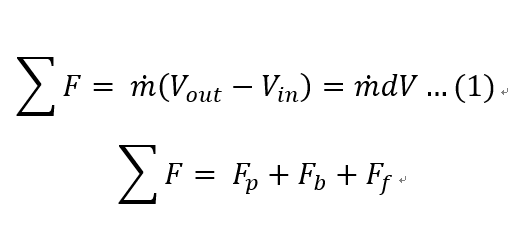
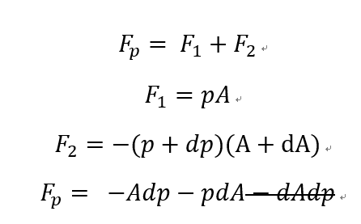
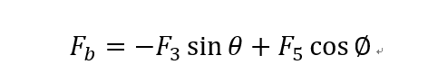
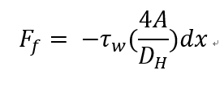
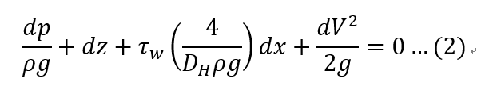
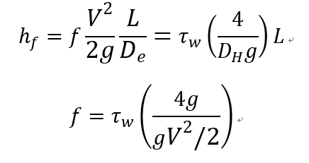
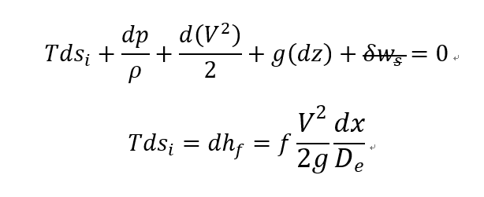

유체역학 Internal flow 에서 다룰 내용이지만 여기서도 다루보겠습니다.
Steady state 1-D pipe internal flow 에서 마찰력이 어떻게 유동에 영향을 주는지를
Infinitesimal Control volume 으로 분석해보자
![[Gas Dynamics] Ch 3 Internal flow friction factor](./images/img-001.jpg)
가장먼저 Reynolds transport theorem 을 이용한 linear momentum Equation 을 사용하면

알짜힘은 총 3가지 Pressure, Body, Friction force로 나누어진다.
이제 각각 힘의 크기를 구해보자.
1. Pressure force

시원하게 High order derivative term 날려버리고
2. Body force

Body force는 3번(중력), 5번힘(wall이 유체에 가하는 수직항력) 총 2가지이고
우리는 유체의 유동방향 +x direction 의 힘을 구해야 하기 때문에 각각 항들만 뽑아준다.
여기서 3번 힘 term 은
![[Gas Dynamics] Ch 3 Internal flow friction factor](./images/img-005.png)
가장 중요한게 옆 벽면의 sin 값은 dA랑 같다는 것이다.
따라서
![[Gas Dynamics] Ch 3 Internal flow friction factor](./images/img-006.png)
이제 5번 힘을 살펴보자
이 힘은 중력이다 따라서 중력 = 밀도 * 부피 * g
하지만 물체의 형태를 정확히 알 수 없으므로
중력 = [밀도평균][면적평균][높이] *g 식으로 나타내기로 하자
![[Gas Dynamics] Ch 3 Internal flow friction factor](./images/img-007.png)
여기서 제일 위쪽 사진을 보면 dx cos값은 dz 라는 것은 중등수학으로 알 수 있다
3. Friction force
![[Gas Dynamics] Ch 3 Internal flow friction factor](./images/img-008.png)
![[Gas Dynamics] Ch 3 Internal flow friction factor](./images/img-009.png)
Shear force 는 Shear stress * 면적인것은 고체역학 시간에 다뤘다.
여기서 면적을 Wetted perimeter of the fluid (유체와 벽이 만나는 둘레) 을 이용하여 표현하자. 왜냐면???
"Hydraulic Diameter과 면적으로 표현 할 수 있으므로"
Hydraulic Diameter 정의
만약에 circular type 이라면 Radius 를 구하여 면적을 구할 수 있지만 non circular shape인 경우 정의 할 수 없다. 따라서
Hydraulic Diameter이라는 개념을 도입하여 Non-circular 인경우에도 반지름 역할을 할 수 있도록 정의하였다.
그리고 이 값은 4*면적 / wetted perimeter 로 정의된다.
![[Gas Dynamics] Ch 3 Internal flow friction factor](./images/img-010.png)
따라서 Hydraulic Diameter 정의를 이용한 마찰력은 다음과 같다.

이제 구한 모든 힘들을 처음 Linear momentum Equation (1) 에 대입해주자 모두
![[Gas Dynamics] Ch 3 Internal flow friction factor](./images/img-012.png)
같은식 pdA를 소거하고 모두 우항으로 넘긴후
ρ
Ag로 나눠주자 전부
![[Gas Dynamics] Ch 3 Internal flow friction factor](./images/img-013.png)
여기서 아주 중요한 다른 개념이 하나더 나온다 바로 Darcy friction factor(f)
Steady state , 1-Dimensional flow, no shaft work 에서 Energy equation은 다음과 같았다.
여기서 Internal enegry 와 Heat term 을 우항으로 옮기면
![[Gas Dynamics] Ch 3 Internal flow friction factor](./images/img-014.png)
즉 시스템이 받은 열과 마찰로 인한 내부에너지변화가
총 에너지 손실
이라는 것이다.
위 우항의 손실항을 Head loss라 정의하고 hf 라고 표기한다.
![[Gas Dynamics] Ch 3 Internal flow friction factor](./images/img-015.png)
여기서 German Weisbach professor는 Headloss 가 L/d , V^2에 비례하다는 것을
실험
으로 발견하고 밑 식으로 정의하여였다.
![[Gas Dynamics] Ch 3 Internal flow friction factor](./images/img-016.png)
여기서 마찰상수 f를 Darcy-friction factor라고 정의한다.
그 이유는 Darcy 는 f= f(Re,wall roughness)의 식으로
실험을 통해서
Chart 를 만들 었기 때문이다.
즉 우리는 Pipe 내부의 Reynolds number와 Wall roughness 가 있다면
Darcy friction factor 을 구할 수 있고 이를 통해서 Head loss 즉 수두 손실양을 계산 할 수 있다.
다시 본론을 돌아가보면 우리는 Darcy friction factor 와 shear stress의 관계를 알 수 있게 된다.

![[Gas Dynamics] Ch 3 Internal flow friction factor](./images/img-018.png)
Linear momentum equation 으로 유도한 (2) 식 을 적분하면 dx -> L 이 되고 따라서
Energy equation 으로 유도한 (1) 식 을 빼주면

우리는 Darcy friction factor 와 Shear stress의 관계식을 유도할 수 있다.
뿐만 아니라
pressure-entropy energy equation에서

Entropy-pressure Equation 을 통해서
Irreversible term , Head loss term, Dracy friction term
이 3가지 term 이 서로 같다는 것을 알 수 있다.